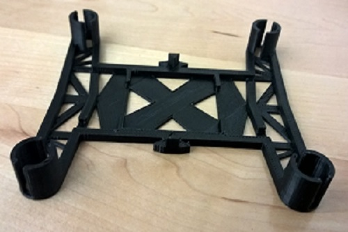
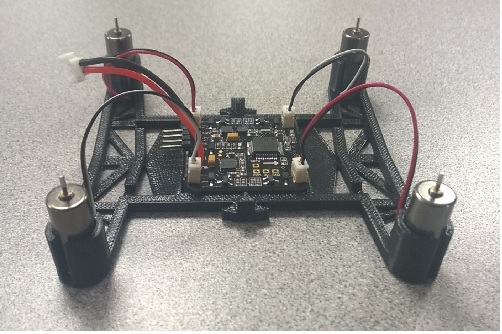

The PentaVision Drone is a modification to the drone kit that Team Penta has purchased from 3D Fly. Team Penta built their own software for the drone so that the drone can fly, turn and more. There are more modifications to come to the PentaVision Drone. In order to make the body for the drone, Team Penta had to 3D print the body. Next, they had to solder the essential components onto the board of the drone. The PentaVision Drone is operated from an Arduino board that came with the 3D Fly kit.

In an article titled “7 Ways to Use Drones in the Classroom” posted on Edutopia.org, Heather Wolpert-Gawron, a Middle School Curriculum Coordinator explains different uses for drones in the classroom. Gawron explains drones can be used by students for Social Studies by using images taken from the drone to draw maps and use aerial footage of land to show the expansion of several historic civilizations. She also explains that footage of team plays can be taken in order to better teams’ plays and show the team what they can do better in the future. Gawron also says that drones can help students work on their teambuilding skills as they can produce a video. The video can be built in teams and use the drone as a camera to take better videos. Finally, Gawron states that they could use the privacy issues that the drones pose and use them as a research project. This issue will get the students to “think about the macro while living in the micro.”
After Team Penta soldered the components onto the board, they uploaded their custom program to make the drone fly. The main purpose for this drone is to use it for education. They plan to use the drone to calculate the temprature, air pressure and the altitude of certain places in order to better understand Earth’s atmosphere. While the PentaVision Drone is in the air taking temperatures and the air pressure, Team Penta will be able to capture beautiful shots of the surrounding environment.

FAA Regulations (effective December 21, 2015) You must register your drone if:
If the aircraft is more than 55lbs:
Team Penta is very open to recommendations for their drone, so feel free to Contact Us for your ideas on what we should do. Thank you very much for your support!
https://www.gofundme.com/btectsapenta
Amazon.Drone This is a drone that Amazon.com has launched to revolutionize the future of delivery. Instead of using men and trucks and long delivery processes to deliver their items, a team at Amazon have taken this new idea of drones to ship products to their consumers at a lower cost and in an extremely small amount of time. The system works by using a pad that is placed in a place of your desire that tells the drone where to land. Your packages can be delivered in 30 minutes (or less). The drone uses smart software that detects and scans for hazards in the air and around it so that collisions are prevented. The Amazon Drone can travel upwards of 50MPH.